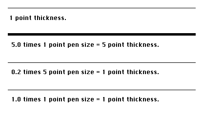

|
|
This technical note describes the internal implementation, and correct method
of using, the SetLineWidth Picture Comment.
[Nov 01 1987]
|
Introduction
The SetLineWidth picture comment provides a way of accessing
PostScript's 'setlinewidth' operator. Since the LaserWriter resolution is
roughly four times that of the Macintosh screen, fractional line widths can be
printed. The SetLineWidth PicComment provides a way for applications
to access these fractional line widths through PostScript, without having to
use floating point numbers.
First of all, the LaserWriter has an internal state that is stored in a number
of PostScript variables. For more information on PostScript variables, see the
PostScript Language Reference Manual. Some operations performed on the
LaserWriter cause the values of these variables to change. One of these
variables contains the width of the printer's pen. The SetLineWidth
picture comment works by changing the value of this variable.
Before we look at what the SetLineWidth comment does, let's look at
the argument passed to the comment. The argument is represented as a QuickDraw
Point, however it is interpreted by the LaserWriter as a fraction. The
LaserWriter interprets a point(h,v) to be a real number whose value is
(v / h). This means that a point whose value is h=2, v=1, will be
converted to 0.5 before being used by the LaserWriter. If you wanted to pass a
value of 0.25, you would pass a point whose value is h=4, v=1. For 1.25, pass a
point, h=4, v= 5.
In addition to the pen width variable, there is a variable that is used for
scaling the pen's width. This variable, named pnm for PeN Multiplier,
contains a real number which is applied to the pen width. The default value of
pnm is 1.0, which causes no scaling of the line width.
Whenever the SetLineWidth PicComment is sent to the LaserWriter, the
current value of pnm is replaced by the value passed to the
PicComment. The current pen size is then scaled by the new value of
pnm. The following example will display four lines of different sizes.
It is meant to illustrate the interaction between the QuickDraw
PenSize procedure and the SetLineWidth PicComment.
TYPE
widthHdl = ^widthPtr;
widthPtr = ^widthPt;
widthPt = Point;
VAR
theWidth: widthHdl;
BEGIN
|
At this point, it is assumed that PrPageOpen has been called, and the
print manager is ready to accept data.
The first thing we do is set the scaling factor to 1.0. This way, no scaling
will be performed when we call PenSize.
theWidth := widthHdl(NewHandle(SizeOf(widthPt)));
(*Real programs do error checking here... *)
SetPt(theWidth^^, 1, 1);
|
Here we call PenSize. Because the pnm has been set to 1.0,
the pen size(1,1) times the multiplier (1.0) yields 1,1.
PenSize(1, 1);
MoveTo(50, 100);
LineTo(500, 100);
MoveTo(50, 125);
|
Now we will use the SetLineWidth PicComment to change the pen size.
Note that when we change the scaling factor, the pen size changes as well.
SetPt(theWidth^^, 1, 5);
PicComment(SetLineWidth, SIZEOF(widthPt), Handle(theWidth));
MoveTo(50, 200);
LineTo(500, 200);
MoveTo(50, 225);
|
If any calls to PenSize are made at this point, the new pen size will
be scaled by 5.0. This is because the SetLineWidth PicComment is still
in effect. We will now send a SetLineWidth PicComment to revert the
scaling factor back to 1.0.
SetPt(theWidth^^, 5, 1);
PicComment(SetLineWidth, SIZEOF(widthPt), Handle(theWidth));
MoveTo(50, 300);
LineTo(500,300);
MoveTo(50, 325);
|
Since the scaling is once again 1.0, PenSize calls at this point will
not be scaled. Here we explicitly set the scaling factor to 1.0 before changing
the pen size. This makes it easier to see what scaling will be applied to the
next call to PenSize.
SetPt(theWidth^^, 1, 1);
PicComment(SetLineWidth, SIZEOF(widthPt), Handle(theWidth));
PenSize(1, 1);
MoveTo(50, 400);
LineTo(500,400);
MoveTo(50, 425);
DrawString('1.0 times 1 point pen size = 1 point thickness');
(* Dispose of the handle when you are through with it! *)
|
When printed, the above example will produce the following:

To summarize, there are four things to remember when using the
SetLineWidth PicComment:
- The argument to the
SetLineWidth PicComment is specified as a point, though it is actually interpreted by the LaserWriter as a real number. The point value is specified as h,v, and the LaserWriter interprets the value as v / h.
- The
SetLineWidth PicComment affects both the height and width of the pen, even though the name suggests otherwise.
- When you send the
SetLineWidth PicComment, the current pen size will be scaled. Any drawing that is done after the PicComment is set, will be done with the scaled pen size.
- When you call the QuickDraw
PenSize procedure, the pen size will be scaled after it has been set. For example, if your scaling factor is 0.5, and you set the pen size to 2,2, the actual pen size will be 1,1. If you don't want the scaling to occur, make sure to send a SetLineWidth PicComment, with the point argument set to 1,1. The next call to PenSize will then be scaled by 1.0, which will have no effect.
Back to top
References
LaserWriter Reference Manual
PostScript Language Reference Manual
PostScript Language Tutorial and Cookbook
Back to top
Downloadables
|

|
Acrobat version of this Note (80K).
|
Download
|
|